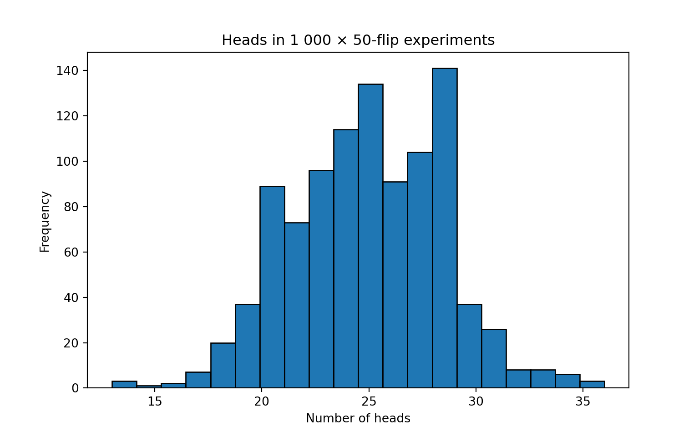
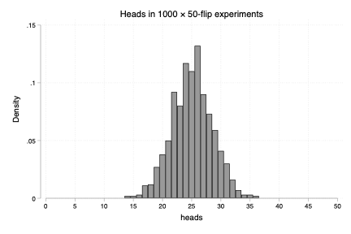
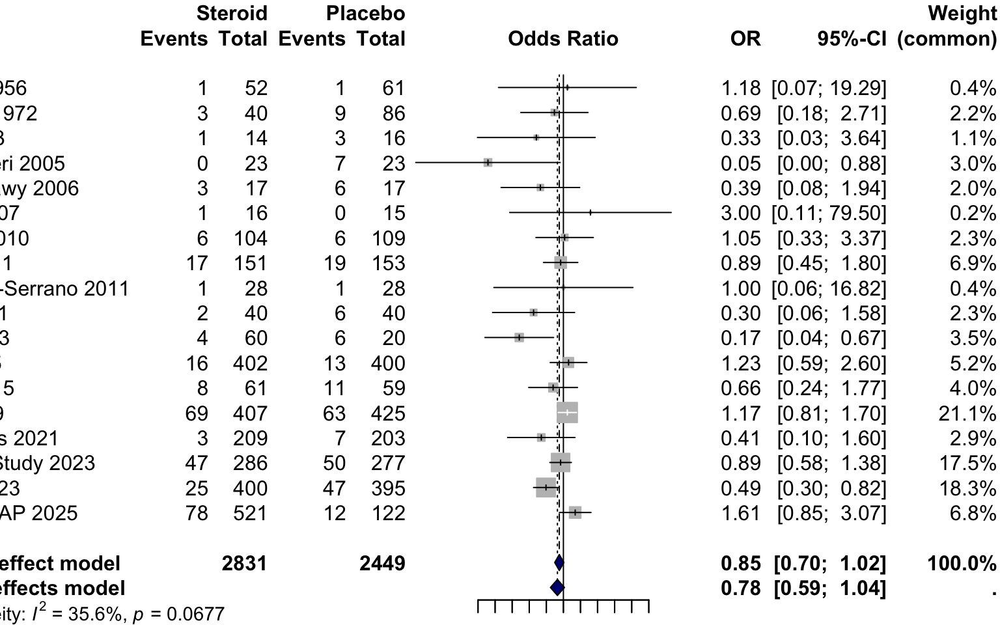
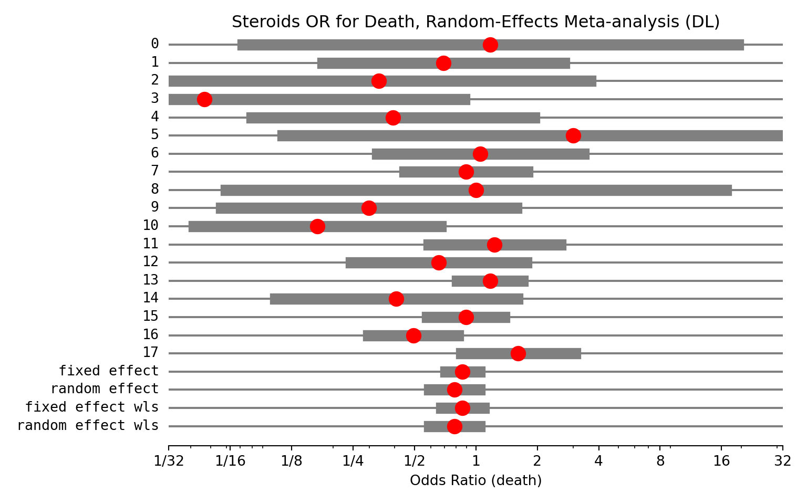
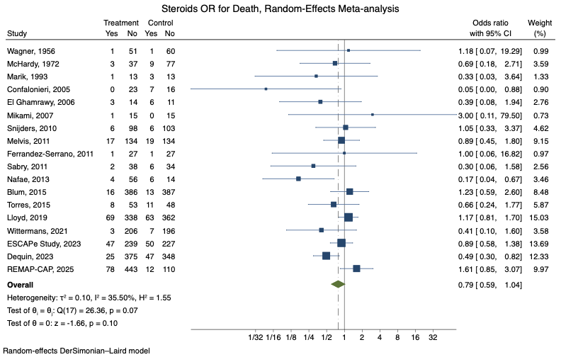

2 Statistical Software
In the past, researchers had to manually code all the statistical formulae for their analyses, which was tedious and error-prone. Today, statistical software simplifies this process dramatically. Researchers can shift their focus from the technical complexities of computation to understanding statistical logic and applying analyses correctly.
This section offers guidance on selecting appropriate statistical programming language, walks through the set-up process, and introduces the basics of conducting statistical analyses using modern tools.
2.1 Statistical software options:
R, Python, and Stata are the 3 most commonly used languages.
| R | Python | Stata | |
| Cost | Free | Free | Requires License |
| IDE | RStudio/Posit | Many, Visual Code is good | Built in editor |
| Strengths | Best libraries for epidemiology, trial statistics. | Best libraries for text processing, machine learning, AI integration | Simple syntax; powerful quasi-experimental/meta-analysis packages. Used by U of U MSCI. |
| Weakness | Clunky syntax; many ‘dialects’ | Overkill for many, complex development environment | Clunkiest machine learning, explainable programing, cost. |
| Explainable programmingWriting analytic code in a clear, structured, and understandable way so that readers (including reviewers, collaborators, and future researchers) can easily follow and replicate the steps of your analysis. In quantitative disciplines such as mathematics and computer science, providing such code is already standard practice. Medicine is beginning to adopt this approach, recognizing its importance for transparency and reproducibility. | Quarto | Jupyter, Quarto | Not native (though can use Jupyter) |
There are a few other language options (SPSS, SAS, Julia, etc.), but they are omitted for brevity (generally, not the best modern options)
| term | definition |
|---|---|
| Explainable programming | Writing analytic code in a clear, structured, and understandable way so that readers (including reviewers, collaborators, and future researchers) can easily follow and replicate the steps of your analysis. In quantitative disciplines such as mathematics and computer science, providing such code is already standard practice. Medicine is beginning to adopt this approach, recognizing its importance for transparency and reproducibility. |
2.2 How to install
Choose the tab for the language(s) you plan to use:
2.2.1 Instructions:
| 1: | Install R Language | https://cran.r-project.org/ | This installs the base programming language |
| 2: | Install RStudio | https://posit.co/downloads/ | RStudio is an IDEIntegrated Development Environment, a program that allows for writing, running, and debugging code within a single program. (integrated development environment) that allows you to write, execute, and debug code from within a single program. |
| 3: | Install Quarto (formerly Markdown) | https://quarto.org/docs/get-started/ | Facilitates sharing and explaining your code. |
|
1: |
Install Python Language and dependencies |
This (mini-forge) installs the base Python programming language, the things it depends on, and many useful packages |
|
|
2: |
Create an environment |
Execute the following commands in a terminal:
|
This sets up an environment (controls the versions and packages that are used). |
|
3: |
Install Visual Code |
Visual Code is an IDE (integrated development environment) that allows you to write, execute, and debug code from within a single program. |
*Note: there are many IDEIntegrated Development Environment, a program that allows for writing, running, and debugging code within a single program.. Visual Code is a classic one with a lot of functionality, though there are AI enabled ones (e.g. Cursor) that may be more helpful depending on how much programming you plan to do and whether you want to bother with the added complexity (discussed more in Section 2.7).
You can also use Quarto for explainable programming in Python - but Jupyter is a more common workflow so we focus on that.
| 1: | Get a product key | if U of U Trainee, contact me | This verifies you or your institutions’ purchase |
| 2: | Install STATA | https://www.stata.com/install-guide/ | Includes language and IDEIntegrated Development Environment, a program that allows for writing, running, and debugging code within a single program. (integrated development environment) |
2.3 Packages
For common statistical analyses in any of these languages, specialized packages already exist that handle these tasks efficiently. Whenever you find yourself manually calculating or coding a statistical procedure, consider that someone likely has already written reliable, tested code that will perform the analysis faster and more accurately. You’ll want to use these packages whenever possible.
First, a few terms: functionA reusable piece of code that performs a specific task. Examples include calculating the mean of a dataset or running logistic regression., argumentsInputs provided to a function so it can perform its task. For instance, a function calculating a mean needs a dataset, while logistic regression requires data, the outcome variable, and predictor variables., packageA curated collection of functions designed to accomplish related tasks. Programming languages come pre-installed with basic packages, but you’ll often download additional packages to access specialized functions. Each language provides straightforward ways to locate and install new packages.
| term | definition |
|---|---|
| arguments | Inputs provided to a function so it can perform its task. For instance, a function calculating a mean needs a dataset, while logistic regression requires data, the outcome variable, and predictor variables. |
| function | A reusable piece of code that performs a specific task. Examples include calculating the mean of a dataset or running logistic regression. |
| package | A curated collection of functions designed to accomplish related tasks. Programming languages come pre-installed with basic packages, but you’ll often download additional packages to access specialized functions. Each language provides straightforward ways to locate and install new packages. |
2.3.1 Finding Packages
| Where to find packages? | https://cran.r-project.org/web/views/ |
| Command to install packages |
install.packages(`package_name`)
|
| How to access documentation file? |
?package_name or ?command_name
|
|
Where to find packages? |
|
|
Command to install packages |
|
|
How to access documentation file? |
The project page on https://pypi.org/ or https://github.com/ |
| Where to find packages? | findit package_name |
| Command to install packages | ssc install package_name |
| How to access documentation file? | help package_name |
2.4 Reproducible Research
As mentioned before, Explainable programmingWriting analytic code in a clear, structured, and understandable way so that readers (including reviewers, collaborators, and future researchers) can easily follow and replicate the steps of your analysis. In quantitative disciplines such as mathematics and computer science, providing such code is already standard practice. Medicine is beginning to adopt this approach, recognizing its importance for transparency and reproducibility. is an increasingly important idea because programming errors frequently lead to erroneous research results. Understandable analytic code is important for co-authors to understand and verify what you’ve done, as well as facilitating replication and improvements.
Importantly (and, as will be discussed in Chapter 3), it’s not just the statistical design choices that can have an influence on the observed outcomes. Researchers must decide what data should be included, how the data should be cleaned, whether missing values will be imputed (and if so, how). All this occurs before talk of statistical tests, regressions, or presentation occur.
By some estimates, variation in how these pre-processing tasks are done accounts for more variability in findings than the design choices most readers focus on. Accordingly, the data processing code that is shared should include the entire process, from data cleaning to figure generation.
Statistical Methods and analysis: Pitfalls of research: https://journals.stfm.org/primer/2022/van-smeden-2022-0059/#.YvQyN_kxOPE.twitter How to structure the project files: https://medium.com/the-stata-guide/the-stata-workflow-guide-52418ce35006 Reproducible code info: https://twitter.com/lisadebruine/status/1504063177012695047?s=11 Citation for need to release analytic code: https://academic.oup.com/jamia/article-abstract/30/5/859/7056675
2.4.1 How to document and share code
In R, the easiest way to put together understandable and sharable code is to use Quarto documents (this website is actually is generated in Quarto).
Quarto creates notebooks that include segments that can contain text and pictures with other sections that contain executable R code. The segments containing R code can be executed in subsequent order - variables are shared between the boxes - thus allowing a long analytic pipeline to be broken up into small understandable chunks.
To create a new Quarto notebook, go to File->New->Quarto Document (*.qmd). Leave all the options in their default. Try it to make the below notebook.
For example, a hypothetical analysis might go something like:
2.4.1.1 Example Simulation of Coin Flips:
Our aim is to simulate the number of heads seen if a coin is flipped 50 times.
First, we create a function that simulates a fair coin flip: 50% probability heads (coded as 1), 50% probability of tails (coded as 0)
Then, we write a program that repesents a single simulation: the coin is flipped 50 times
## run one experiment of 50 flips and return #Heads
simulate_50 <- function() {
sum(flip_coin(50))
}
## quick demo
set.seed(42) # reproducible example
simulate_50()[1] 27Then, we perform 1000 simulations and store the results in an array, which we then present summary statistics on.
set.seed(42) # reproducible simulations
n_sims <- 1000 # how many experiments?
results <- replicate(n_sims, simulate_50())
summary(results) # five-number summary
hist(results,
breaks = 20,
main = "Distribution of heads in 1 000 × 50-flip experiments",
xlab = "Number of heads") 
Min. 1st Qu. Median Mean 3rd Qu. Max.
14.00 22.00 25.00 24.74 27.00 35.00 2.4.1.2 Nuts and Bolts
Obviously, this example is a bit contrived, but is meant to show how the text and code can be interleaved to make the resulting output easy to understand. This quarto file can then be shared with collaborators (or posted on a code sharing site, such as github - provided none of the protected health information is hard coded into the text.
As an exercise, see if you can create your own Quarto markdown file, and extend the analysis to generate the interquartile range for the mean number of Heads in 50 flips.
In Python, the easiest way to put together understandable and sharable code is to use Jupyter notebooks.
Jupyter (like Quarto) creates notebooks that include segments that can contain text and pictures with other sections that contain executable Python code. The segments containing Python code can be executed in subsequent order - variables are shared between the boxes - thus allowing a long analytic pipeline to be broken up into small understandable chunks.
To create a new Jupyter notebook, go to File -> New Jupyter Notebook (*.ipynb). Try it to make the below notebook.
For example, a hypothetical analysis might go something like:
2.4.1.3 Example Simulation of 50 Coin Flips
Our aim is to simulate the number of heads seen if a coin is flipped 50 times.
First, we create a function that simulates a fair coin flip: 50% probability heads (coded as 1), 50% probability of tails (coded as 0)
Then, we write a program that repesents a single simulation: the coin is flipped 50 times
def simulate_50() -> int:
"""Flip a coin 50 × and return the number of heads."""
return sum(flip_coin(50))
random.seed(42) # reproducible example
simulate_50()25Then, we perform 1000 simulations and store the results in an array, which we then present summary statistics on.
import numpy as np
import matplotlib.pyplot as plt
random.seed(42)
n_sims = 1000
results = [simulate_50() for _ in range(n_sims)]
# summary statistics
print(f"min : {min(results)}")
print(f"max : {max(results)}")
print(f"mean : {np.mean(results):.2f}")
print(f"sd : {np.std(results, ddof=1):.2f}")
# visualise
plt.hist(results, bins=20, edgecolor="black")
plt.title("Heads in 1 000 × 50-flip experiments")
plt.xlabel("Number of heads")
plt.ylabel("Frequency")
plt.show()min : 13
max : 36
mean : 24.93
sd : 3.48
2.4.1.4 Nuts and Bolts
Obviously, this example is a bit contrived, but is meant to show how the text and code can be interleaved to make the resulting output easy to understand. This Jupyter notebook can then be shared with collaborators (or posted on a code sharing site, such as github - provided none of the protected health information is hard coded into the text.
As an exercise, see if you can create your own Jupyter notebook file, and extend the analysis to generate the interquartile range for the mean number of Heads in 50 flips.
Stata does not have a native notebook-style way to share code, but instead you have *.do files that contain a script of the relevant commands, and you can add comments using either # , *, or //* *//*
To create a new STATA do file, go to File -> New -> Do File (*.do). Try it to make the below script.
Stata Code: *.do files dont have an easy way to execute within the web page, so you’ll have to run the below script on your own machine to see the output.
*-----------------------------------------------------*
* 1. Set the number of simulations *
*-----------------------------------------------------*
local nsims = 1000 // how many experiments?
local nflips = 50 // flips per experiment
set obs `nsims' // create `nsims' empty observations
* Optional: reproducibility
set seed 42
*-----------------------------------------------------*
* 2. Simulate 50 fair-coin flips for each experiment *
* A "head" is coded 1 when runiform() < .5 *
*-----------------------------------------------------*
forvalues j = 1/`nflips' {
generate byte flip`j' = runiform() < .5
}
*-----------------------------------------------------*
* 3. Count heads in each experiment *
*-----------------------------------------------------*
egen heads = rowtotal(flip1-flip`nflips')
*-----------------------------------------------------*
* 4. Inspect the sampling distribution *
*-----------------------------------------------------*
summarize heads
histogram heads , ///
width(1) start(0.5) /// each bin spans one integer count
title("Heads in `nsims' × `nflips'-flip experiments") ///
xlabel(0(5)50) /// tick every 5 heads; adjust as desired
ylabel(, angle(horizontal))
2.4.1.5 Nuts and Bolts
Obviously, this example is a bit contrived, but is meant to show how the text in comments and code can be interleaved to make the resulting output easy to understand. This do file can then be shared with collaborators (or posted on a code sharing site, such as github - provided none of the protected health information is hard coded into the text.
As an exercise, see if you can create your own Stata do file, and extend the analysis to generate the interquartile range for the mean number of Heads in 50 flips.
2.5 Reproducible Research
From a perspective of scientific rigor, sharing should also include the individual patient data to allow researchers to directly replicate or modify the reported analyses. However, despite research participant support for data sharing, privacy concerns and research ethics concerns generally do not permit the sharing of data, even if it has been pseudonomized. This is an active space where “ideal” and “actual” are far apart… but the current takeaway is that individual patient data should not ben shared unless that was explicitly part of the IRB authorization.
Further reading (R focus): https://raps-with-r.dev/intro.html building reproducible analytical pipelines: https://rap4mads.eu/?utm_source=substack&utm_medium=email Citation: reproducible computing: https://journals.plos.org/plosbiology/article?id=10.1371/journal.pbio.1001745
principles for reproducible and efficient computing; https://journals.plos.org/plosbiology/article?id=10.1371/journal.pbio.1001745
2.6 An Example: Meta-analyzing the effect of corticosteroids in CAP
Let’s use meta-analysis as a quick example of how to put this all into action.
A meta-analysis typically accompanies a systematic review to comprehensively capture relevant studies on a question. Systematic reviews are complex, so we’ll skip the details here. Instead, we’ll perform a meta-analysis using a prepared spreadsheet of all known steroids-for-CAP studies (let me know if any studies are missing).
Download the data here: Steroid CAP Trials Spreadsheet
# ---- display the table ------------------------------------------------------
kable(steroids_pna, caption = "Steroids PNa meta-analysis data")| study | year | chest_ma | int_death | int_alive | pla_death | pla_alive |
|---|---|---|---|---|---|---|
| Wagner | 1956 | 0 | 1 | 51 | 1 | 60 |
| McHardy | 1972 | 0 | 3 | 37 | 9 | 77 |
| Marik | 1993 | 0 | 1 | 13 | 3 | 13 |
| Confalonieri | 2005 | 0 | 0 | 23 | 7 | 16 |
| El Ghamrawy | 2006 | 0 | 3 | 14 | 6 | 11 |
| Mikami | 2007 | 0 | 1 | 15 | 0 | 15 |
| Snijders | 2010 | 0 | 6 | 98 | 6 | 103 |
| Melvis | 2011 | 0 | 17 | 134 | 19 | 134 |
| Ferrandez-Serrano | 2011 | 0 | 1 | 27 | 1 | 27 |
| Sabry | 2011 | 0 | 2 | 38 | 6 | 34 |
| Nafae | 2013 | 0 | 4 | 56 | 6 | 14 |
| Blum | 2015 | 0 | 16 | 386 | 13 | 387 |
| Torres | 2015 | 0 | 8 | 53 | 11 | 48 |
| Lloyd | 2019 | 0 | 69 | 338 | 63 | 362 |
| Wittermans | 2021 | 0 | 3 | 206 | 7 | 196 |
| ESCAPe Study | 2023 | 0 | 47 | 239 | 50 | 227 |
| Dequin | 2023 | 0 | 25 | 375 | 47 | 348 |
| REMAP-CAP | 2025 | 1 | 78 | 443 | 12 | 110 |
Now, we’ll cover how you’d meta-analyze these studies in each language as an exercise:
2.6.1 Example Code
In R, here’s the steps needed to perform the meta-analysis:
First, set your working directory to wherever you downloaded the file. Then, we’ll need to make sure we have the right package to read in the spreadsheet
We’ll need the ‘readxl’ package to read in the *.xls file https://cran.r-project.org/web/packages/readxl/index.html
Then, we write code to import the spreadsheet with study data
library(readxl) # install.packages("readxl") if needed
## --- OPTION A – read from a local copy ------------------------------------
# setwd("~/your_dir") # uncomment and edit this line
# dat <- read_xls("Steroids PNa MA.xls", sheet = "Sheet1") |>
# janitor::clean_names()
## --- OPTION B – read directly from the GitHub raw file ----
url <- "https://raw.githubusercontent.com/reblocke/statistics_sandbox/" |>
paste0("1b87fb4e65da11a7f9541ea9c7f93b7e3947a13a/",
"Steroids%20PNa/Steroids%20PNa%20MA.xls")
tmp <- tempfile(fileext = ".xls") # download to a temp file
download.file(url, tmp, mode = "wb")
dat <- read_xls(tmp, sheet = "Sheet1") |>
janitor::clean_names() # lower-case, snake_case
# Inspect the key columns
dat |>
dplyr::select(study, year,
int_death, int_alive,
pla_death, pla_alive) |>
print()# A tibble: 18 × 6
study year int_death int_alive pla_death pla_alive
<chr> <dbl> <dbl> <dbl> <dbl> <dbl>
1 Wagner 1956 1 51 1 60
2 McHardy 1972 3 37 9 77
3 Marik 1993 1 13 3 13
4 Confalonieri 2005 0 23 7 16
5 El Ghamrawy 2006 3 14 6 11
6 Mikami 2007 1 15 0 15
7 Snijders 2010 6 98 6 103
8 Melvis 2011 17 134 19 134
9 Ferrandez-Serrano 2011 1 27 1 27
10 Sabry 2011 2 38 6 34
11 Nafae 2013 4 56 6 14
12 Blum 2015 16 386 13 387
13 Torres 2015 8 53 11 48
14 Lloyd 2019 69 338 63 362
15 Wittermans 2021 3 206 7 196
16 ESCAPe Study 2023 47 239 50 227
17 Dequin 2023 25 375 47 348
18 REMAP-CAP 2025 78 443 12 110Next, we’ll need to get a package to do the meta-analysis. Here’s a list of relevant packages: https://cran.r-project.org/web/views/MetaAnalysis.html
The ‘meta’ package looks good. Try using `install.packages(‘meta’)` to install it, then you can you can access the documentation using `?meta`
Now, we’ll perform a random-effects meta-analysis (Using DL variance stimator)
Loading required package: metadatLoading 'meta' package (version 8.1-0).
Type 'help(meta)' for a brief overview.Lastly, we’ll need to plot the result as a Forest Plot on a log scale (always log scale with ratio variables)
forest(
m,
comb.fixed = FALSE,
comb.random = TRUE,
print.tau2 = FALSE,
backtransf = TRUE,
xlab = "Odds Ratio (death)",
leftlabs = c("Study (year)", "Steroid", "Placebo"),
xlog = TRUE,
at = c(1/32, 1/16, 1/8, 1/4, 1/2, 1, 2, 4, 8, 16, 32),
label.e = "Steroid",
label.c = "Placebo",
col.diamond = "navy",
overall.lty = 2,
## keep the default right-hand columns
# rightcols = FALSE, # <-- delete this line
main = "Steroids OR for Death, Random-Effects Meta-analysis"
)
In Python, here’s the steps needed to perform the meta-analysis:
First, set your working directory to wherever you downloaded the file. Then, we’ll need to make sure we have the right package to read in the spreadsheet
Then, we write code to import the spreadsheet with study data using pandas
import pandas as pd
# --- OPTION A: read directly from disk -------------------------------
# df = pd.read_excel("Steroids PNa MA.xls", sheet_name="Sheet1")
# --- OPTION B: For this demo we fetch the raw file from GitHub (same content as R block)
url = ("https://raw.githubusercontent.com/reblocke/statistics_sandbox/"
"1b87fb4e65da11a7f9541ea9c7f93b7e3947a13a/"
"Steroids%20PNa/Steroids%20PNa%20MA.xls")
df = pd.read_excel(url) # GitHub serves raw file
# clean column names to snake_case like janitor::clean_names()
df.columns = (df.columns
.str.strip()
.str.lower()
.str.replace(" ", "_"))
# quick sanity check
df.head(18) study year chest_ma ... int_alive pla_death pla_alive
0 Wagner 1956 0 ... 51 1 60
1 McHardy 1972 0 ... 37 9 77
2 Marik 1993 0 ... 13 3 13
3 Confalonieri 2005 0 ... 23 7 16
4 El Ghamrawy 2006 0 ... 14 6 11
5 Mikami 2007 0 ... 15 0 15
6 Snijders 2010 0 ... 98 6 103
7 Melvis 2011 0 ... 134 19 134
8 Ferrandez-Serrano 2011 0 ... 27 1 27
9 Sabry 2011 0 ... 38 6 34
10 Nafae 2013 0 ... 56 6 14
11 Blum 2015 0 ... 386 13 387
12 Torres 2015 0 ... 53 11 48
13 Lloyd 2019 0 ... 338 63 362
14 Wittermans 2021 0 ... 206 7 196
15 ESCAPe Study 2023 0 ... 239 50 227
16 Dequin 2023 0 ... 375 47 348
17 REMAP-CAP 2025 1 ... 443 12 110
[18 rows x 7 columns]Next, we’ll need to get a package to do the meta-analysis. We’ll use the statsmodels (statsmodels.stats.meta_analysis) package https://www.statsmodels.org/dev/examples/notebooks/generated/metaanalysis1.html
Now, we’ll perform a random-effects meta-analysis (Using DL variance estimator - which takes some manual preparation work).
import numpy as np
from statsmodels.stats.meta_analysis import (
effectsize_2proportions, # log-odds-ratio + variance
combine_effects # pooling with DL
)
# --- 2. per-study log(OR) & variance with 0.5 correction --------------------
a = df["int_death"].to_numpy(dtype=float)
b = df["int_alive"].to_numpy(dtype=float)
c = df["pla_death"].to_numpy(dtype=float)
d = df["pla_alive"].to_numpy(dtype=float)
# continuity correction if any cell is zero in that study
cc = ((a == 0) | (b == 0) | (c == 0) | (d == 0)).astype(float) * 0.5
a += cc; b += cc; c += cc; d += cc
log_or = np.log((a * d) / (b * c))
var_or = 1 / a + 1 / b + 1 / c + 1 / d # variance of log(OR)
# --- 3. DerSimonian-Laird random-effects pooling ---------------------------
res = combine_effects(log_or, var_or, method_re="dl") # DL estimator
print("Current statsmodels version:", importlib.metadata.version("statsmodels"))
sf = res.summary_frame() # still log-OR
sf["eff"] = np.exp(sf["eff"])
sf["ci_low"] = np.exp(sf["ci_low"])
sf["ci_upp"] = np.exp(sf["ci_upp"])
print(sf.round(3))Current statsmodels version: 0.14.4
eff sd_eff ci_low ci_upp w_fe w_re
0 1.176 1.427 0.072 19.285 0.005 0.010
1 0.694 0.696 0.177 2.714 0.020 0.036
2 0.333 1.219 0.031 3.638 0.006 0.013
3 0.047 1.495 0.002 0.878 0.004 0.009
4 0.393 0.814 0.080 1.936 0.014 0.028
5 3.000 1.672 0.113 79.499 0.003 0.007
6 1.051 0.594 0.328 3.369 0.027 0.046
7 0.895 0.356 0.446 1.796 0.075 0.092
8 1.000 1.440 0.059 16.822 0.005 0.010
9 0.298 0.850 0.056 1.578 0.013 0.026
10 0.167 0.711 0.041 0.672 0.019 0.035
11 1.234 0.380 0.586 2.600 0.066 0.085
12 0.659 0.506 0.245 1.774 0.037 0.059
13 1.173 0.190 0.808 1.702 0.264 0.150
14 0.408 0.697 0.104 1.599 0.020 0.036
15 0.893 0.223 0.576 1.383 0.191 0.137
16 0.494 0.258 0.297 0.819 0.142 0.123
17 1.614 0.328 0.849 3.069 0.089 0.100
fixed effect 0.861 0.098 0.711 1.042 1.000 NaN
random effect 0.785 0.145 0.590 1.044 NaN 1.000
fixed effect wls 0.861 0.121 0.678 1.092 1.000 NaN
random effect wls 0.785 0.146 0.590 1.045 NaN 1.000Lastly, we’ll need to plot the result as a Forest Plot on a log scale (always log scale with ratio variables)
import matplotlib.pyplot as plt
# draw the default forest plot (no extra kwargs)
fig = res.plot_forest(use_exp=True)
# post-process the axis with Matplotlib
ax = fig.axes[0] # the single Axes returned by plot_forest
ax.set_xscale("log")
ax.set_xlim(0.03125, 32)
ax.set_xlabel("Odds Ratio (death)")
ax.set_xticks([1/32, 1/16, 1/8, 1/4, 1/2, 1, 2, 4, 8, 16, 32])
ax.set_xticklabels(
["1/32", "1/16", "1/8", "1/4", "1/2",
"1", "2", "4", "8", "16", "32"]
)
plt.title("Steroids OR for Death, Random-Effects Meta-analysis (DL)")
plt.tight_layout()
plt.show()(0.03125, 32)
As before, Stata does not have a native notebook-style way to execute code within this webpage, so you’ll have to run the below script on your own machine to see the output.
Here’s the steps:
*-----------------------------------------------------*
* 1. Set your_dir to wherever you downloaded the doc *
*-----------------------------------------------------*
cd your_dir
*-----------------------------------------------------*
* 2. Import the Spreadsheet with Study Data *
*-----------------------------------------------------*
clear
import excel "Steroids PNa MA.xls", sheet("Sheet1") firstrow case(lower)
list study year int_death int_alive pla_death pla_alive
label variable study "Study"
*-----------------------------------------------------*
* 3. Meta-analyze the studies using REML *
*-----------------------------------------------------*
meta esize int_death int_alive pla_death pla_alive, random(reml) esize(lnor) studylabel(study year)
*-----------------------------------------------------*
* 4. Create a forest plot with the result *
*-----------------------------------------------------*
meta forestplot, eform nullrefline(lcolor(gs3)) esrefline(lcolor(gs3) lpattern(dash_dot)) title("Steroids OR for Death, Random-Effects Meta-analysis") xsize(11) ysize(7) xscale(log range(0.01 64)) xlabel(0.03125 "1/32" 0.0625 "1/16" 0.125 "1/8" 0.25 "1/4" 0.5 "1/2" 1 "1" 2 "2" 4 "4" 8 "8" 16 "16" 32 "32")
2.7 Large Language Models (LLMs)
Randomized trials (!) show the professional coders are more productive when using LLMs to assist with code. Novices see larger relative gains because LLMs supply boiler-plate, interface syntax, and “first drafts” of code.
However, LLMs can hallucinate. They can also be tricky to use. Here’s some guidance that holds for any of the frontier company models (OpenAI: chatGPT, Anthropic Claude, Google Gemini)
2.7.1 Minimal viable set up:
| Step | Why | Tool |
|---|---|---|
| Use your local IDEIntegrated Development Environment, a program that allows for writing, running, and debugging code within a single program. with a plain chat tab or desktop app. | Allows you to (quality)control inputs and outputs - which is harder to do with an integrated IDE (e.g. Cursor) or agentic models. | Built-in browser tab or official desktop app |
| Do NOT upload data to LLMs | The companies do not have Business Access Agreements with institutions, and this generally violates the consent/IRB authorization of most studies. | Keep data local, only share schemas (descriptions of the variables) or mock data. |
| Sanity test all LLM-generated code | Hallucinations exist, and often task specifications are subtly wrong | You can writing coding tests (so called “Unit Tests”, but should also visualize and consider all code (this is true when not using LLMs) |
| Give the LLM examples of what you want | LLMs are VERY good at understanding what existing code does - and can often modify much better than create de-novo | Use things like: here’s the code that generates this figure - modify it so that title is larger. |
| Give the LLM specific instructions, often with steps | The more “context” you give the LLM for what you want, the more likely the associations it follows will be relevant | Detailed instructions in the prompt. More on prompt engineering is available here: https://docs.anthropic.com/en/docs/build-with-claude/prompt-engineering/overview |
Never put PHI into a commercial LLM interface. Not even ‘publicly available’ data like MIMIC (which has terms of use that forbid this). Most companies market their LLMs as being able to act as data-analysts on your behalf (meaning, you give it the data and it analyzes it for you). Don’t do this. https://pmc.ncbi.nlm.nih.gov/articles/PMC10937180/
Instead, use the LLM to help you write statistical code that you then run on your machine.
| Mistake | Consequence | Quick fix |
|---|---|---|
| Skipping LLM entirely | Slower learning curve | Use it for boiler-plate, explaining things, first drafts |
| Blind trust | Silent bugs ≈ misleading science | Unit tests, peer-review, benchmark against known outputs |
| Vague prompt | Generic, unusable code | Include language, package, data schema, desired output |
| Manual debugging | Time sink | Feed the exact error message back to the model |
| Pasting PHI | Compliance breach | Use synthetic or sampled data; keep true identifiers offline |
2.8 Local (and other) resources
One Data Science Hub Workshops: https://utah-data-science-hub.github.io/education_archived.html
Request CTSI help: https://ctsi.utah.edu/cores-and-services/triad
R book (very good, but in-depth): https://r4ds.had.co.nz/index.html
Guide to Python for those familiar with STATA - https://github.com/aeturrell/coding-for-economists/blob/main/coming-from-stata.md Guide to Python for those familiar with R - https://www.emilyriederer.com/post/py-rgo/?utm_source=substack&utm_medium=email